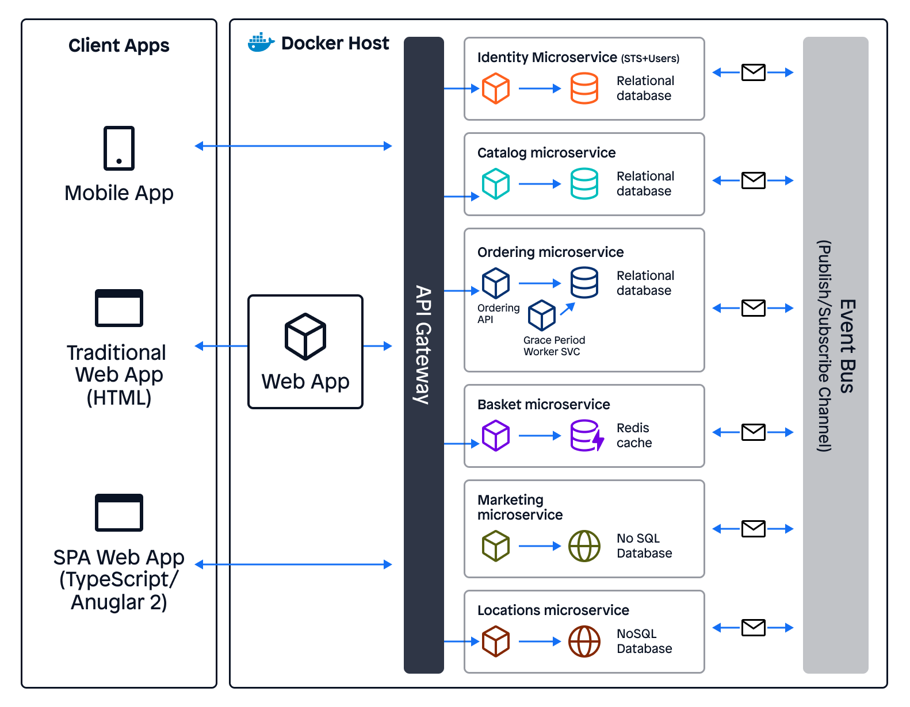

دراسة تحليلية لنماذج SaaS و PaaS و IaaS ودورها في التحول الرقمي
المقرر الدراسي: تطبيقات الإنترنت والمنصات الإلكترونية
اسم التكليف: تحويل التقرير البحثي إلى صفحة ويب باستخدام أساسيات HTML (Task 2)
إعداد الطالبة: منة الله أشرف علي محمد
الرقم الجامعي (الكود): 2503950
إشراف: المهندسة مريم الليلي
شهدت شبكة الإنترنت نقلة نوعية هائلة خلال العقدين الماضيين؛ حيث تحولت من مجرد مواقع إلكترونية ثابتة تعرض صفحات نصية معدومة التفاعل، إلى منصات سحابية تفاعلية متكاملة قادرة على خدمة ملايين المستخدمين لحظياً وبكفاءة فائقة. وتعتمد المنصات الحديثة على دمج خدمات الحوسبة السحابية والبنى التحتية الموزعة لتحقيق أعلى درجات الاستجابة والموثوقية.
وقد تميز هذا التطور بعدة ركائز تقنية جوهرية، أبرزها:
على الرغم من التداخل الشائع بين المفهومين في الاستخدام اليومي، إلا أن هناك فوارق معمارية ووظيفية دقيقة بينهما:

تنقسم خدمات الحوسبة السحابية الحاضنة للمنصات الإلكترونية إلى ثلاثة نماذج رئيسية وفقاً لمعيار NIST، يحدد كل نموذج منها مستوى التحكم والمسؤوليات التقنية الموزعة بين مزود الخدمة والمستخدم:
يمثل نموذج SaaS قمة الهرم السحابي، وهو عبارة عن تطبيقات برمجية متكاملة وجاهزة للاستخدام الفوري عبر متصفح الويب دون الحاجة لتنزيل أي ملفات أو تثبيتها محلياً. وتتولى الشركة المزودة مسؤولية استضافة الخوادم وقواعد البيانات، وإجراء الصيانة والأمان بالكامل.
من أبرز الأمثلة العملية على هذا النموذج: حزمة Google Workspace لإدارة وتعديل الملفات، وحزمة Microsoft 365 السحابية، ومنصة Canva للتصميم الجرافيكي المباشر.
يوفر نموذج PaaS بيئة تطوير واستضافة متكاملة مخصصة للمبرمجين وفرق تطوير البرمجيات؛ حيث يتيح لهم الأدوات البرمجية، محركات التشغيل، وقواعد البيانات الجاهزة. ويتيح ذلك للمطور تركيز جهوده على كتابة الكود البرمجي ومنطق العمل فقط، دون الانشغال بإدارة البنية التحتية أو تكوين الخوادم.
ومن أشهر منصات PaaS: منصة GitHub Pages لاستضافة المواقع الثابتة مجاناً، ومنصتا Vercel و Heroku لنشر تطبيقات الويب بسرعة فائقة، و Google App Engine لبناء تطبيقات قابلة للتوسع التلقائي.
يُعد نموذج IaaS الركيزة الأساسية والطبقة التأسيسية للحوسبة السحابية؛ حيث يمنح المؤسسات إمكانية استئجار موارد حوسبية افتراضية نقية تشمل الخوادم الافتراضية، مساحات التخزين، والمحولات الشبكية عبر الإنترنت. ويمنح هذا النموذج مهندسي الأنظمة تحكماً كاملاً في نظام التشغيل والبرمجيات المثبتة.
ومن رواد هذا المجال: خدمات أمازون السحابية Amazon Web Services (AWS)، ومنصة Microsoft Azure، بالإضافة إلى البنية التحتية لمنصة Cloudflare لحماية وتسريع توصيل المحتوى الرقمي.
يلخص الجدول التالي مقارنة دقيقة بين النماذج السحابية الثلاثة من حيث الفئة المستهدفة، مستوى الإدارة، والمسؤوليات التشغيلية:
| وجه المقارنة | البرمجيات كخدمة (SaaS) | المنصة كخدمة (PaaS) | البنية التحتية كخدمة (IaaS) |
|---|---|---|---|
| الفئة المستهدفة | المستخدمون النهائيون والشركات | المبرمجون ومطورو الويب | مهندسو الشبكات والأنظمة السحابية |
| الوظيفة الرئيسية | تشغيل تطبيقات جاهزة عبر المتصفح | بناء ونشر وتطوير التطبيقات | تأجير عتاد افتراضي وخوادم وشبكات |
| مستوى إدارة العميل | إدارة البيانات الشخصية وإعدادات الاستخدام فقط | إدارة التطبيق والأكواد البرمجية والبيانات | تحكم كامل بنظام التشغيل، الشبكات، والبرمجيات |
| مسؤولية المزود السحابي | إدارة كاملة للمنظومة، الخوادم، والأمان | إدارة الخوادم، بيئات التشغيل، وقواعد البيانات | صيانة العتاد الفيزيائي ومراكز البيانات وتوفير الاتصال |
| أبرز الأمثلة العملية | Google Docs, Microsoft 365, Canva | GitHub Pages, Vercel, Google App Engine | Amazon AWS, Microsoft Azure, Cloudflare |
تتعدد تطبيقات المنصات الإلكترونية لتغطي مختلف جوانب الحياة الحديثة، ومنها:
يقدم الاعتماد على المنصات السحابية مزايا جوهرية تقابلها بعض التحديات التقنية:
في ختام هذا التقرير، نخلص إلى أن تطبيقات الإنترنت والمنصات الإلكترونية السحابية أصبحت الركيزة الأساسية التي يقوم عليها الاقتصاد الرقمي العالمي. ويتيح الفهم المعماري العميق للفروقات بين نماذج SaaS و PaaS و IaaS تمكين المطورين والمؤسسات من اتخاذ القرارات الهندسية الصحيحة لبناء منصات رقمية متطورة، مرنة، وآمنة تلبي تطلعات المستقبل الرقمي.
تم الاستناد في إعداد هذا البحث إلى مجموعة من المصادر والدراسات العلمية والتقنية المعتمدة، ويمكن الوصول إليها مباشرة عبر الروابط التالية: